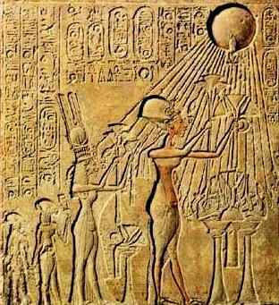
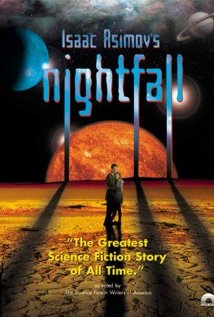
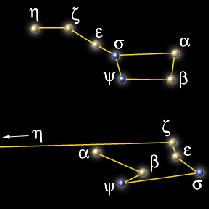

ASTR 1210 (O'Connell) Study Guide
3. INTRODUCTION TO THE SKY
{kind=link}
A. Culture and Scientific Discovery
It took about 500 years of scientific effort to put together the picture of the structure and evolution of the universe described in the last lecture. A vast amount of evidence underpins the elements of this understanding (and the details make up the bulk of the textbook). We believe that this picture is right in its essentials --- so, for instance, when science is taught 300 years from now, it will still be a valid first-cut description. On the other hand, our scientific understanding of the cosmos differs drastically from those of pre-scientific cultures. This raises a fundamental question about human societies: Why didn't we know all this thousands of years ago? More importantly, why didn't we know those other crucial scientific facts with more immediate practical ramifications---like the role of microorganisms in causing disease or the value of refined petroleum as an energetically dense, portable fuel?- It's not because of the evolution of the human brain --- as far
as we can tell, human beings were just as smart in 2000 BC as they are
today. It's not because we had to wait for sophisticated instruments
or electronics to be invented --- these didn't exist in 1500 AD, when
modern science began, either. It's also not because all earlier
societies were too impoverished to worry about studying nature ---
ancient Egypt, India, Babylon, Rome, China, the Islamic Caliphates,
and the Maya were powerful and wealthy cultures.
Fundamentally, it seems to be because most earlier cultures did not
have the right mind-set to pursue nature with verifiable
methods --- the right combination of a deep desire to understand
the world, objective empiricism, discipline, skepticism, independence,
and mental toughness --- as well as freedom from everyday
drudgery.
And there's another pre-requisite: imagination. That's a word most
people don't associate with science. They tend to think that
imagination is confined to "creative" areas like literature, art,
music, and films. But our scale models show that the dimensions of
the universe are so incredibly different from everyday, "common sense"
human scales, where a mile is a fairly large distance, that scientists
require very active imaginations to make progress. They have to
develop an intuition for dealing with these kinds of vastly large (or,
in the case of physics or biology, incredibly tiny) worlds. This is
a key reason that mathematics is essential, both to facilitate and to
discipline those imaginations.
Scientific creativity is also needed to see beyond the data,
to sense the underlying reality, and to build a coherent conceptual
framework involving all the related phenomena.
{kind=link}
B. Motivations for Simple Astronomical Observations
The concerted study of the sky started long before modern science arose ca. 1500 AD. How long? We don't really know---probably at least 8000 years before. Almost every human society whose culture we have been able to sample in detail shows some awareness of celestial phenomena --- if not in the form of written records then in other ways, such as the alignment of buildings to cardinal directions. In prehistoric times, astronomy consisted of simple observations that any interested person could make. In fact, up to the nineteenth century most people were well acquainted with the basic features of the night sky and were able to use them for orientation and as pathfinders for nighttime travel. We are unfamiliar with the sky in modern times mainly because of the advent of artificial lighting, which makes it difficult to see the night sky in urban areas. We no longer need to use the sky as a pathfinder either. Systematic observations of the sky, ranging from crude to highly sophisticated, were made by many historical cultures, pre-literate and literate. Fascination with the sky drew not simply on its appearance, as impressive as that might be on a dark and clear night, but more importantly on the fact that things in the sky moved continuously, some of them in complex ways. The mysterious cycles exhibited by the sky denizens revealed the existence of powers that were (at least initially) beyond human understanding. Of course, the dominant object in the sky, the Sun, also moved in a complicated pattern, and this was important to understand for many practical reasons. So, there were several different motivations for study of the sky:{kind=link}
- Curiosity: the most enduring (and productive) motivation for trying to understand nature
- Important practical applications:
- Navigation: on both land and sea
- Time Keeping: during day and night
- Calendar Keeping: for tracking the date & seasons
- Fear/Religious Belief:
-

Astrology as an example. This is
the idea that the motions of the Sun, Moon, and planets against the
stellar background can be used to predict the future and can influence
human personalities. It derived from the ancient belief that these
objects are living gods, who betray their intentions by their
movements. This was obviously a powerful motivation for observing the
sky.
In the carving shown at the right the Egyptian Pharaoh Akhenaton
(ca. 1350 BC) and his family are communing with the Sun god Aten, the
source of Akhenaton's power. Claims of special access to the secrets
of the sky gods were often the basis for authority in ancient cultures.
As our scientific understanding grew, astrology lost its interest for
most people. We realized that the Sun, Moon, and planets are
inanimate objects, moving in highly regular and predictable
patterns in response to the well understood force of gravity.
They are things, not beings whose motions are wilful. The
constellations and the Zodiac were recognized to lack physical
significance (see below). New planetary bodies, e.g. Neptune, were
discovered that the astrologers had somehow failed to detect or
predict. Statistical tests showed no correlation between "sun signs"
and personality or personal history. There is no evidence for
astrology, either theoretical or empirical. Astrology lingers
only as a form of pseudo-science and casual entertainment, kept alive
by popular wishful
thinking. But it, and related ideas, did play an important
historical role in
encouraging the systematic observations of the sky that ultimately led
to the scientific interpretation of the solar system.
{kind=link}
{kind=link}
Thought experiment
-

Imagine that we couldn't easily study objects in the sky ---
that, for instance, the Earth were perpetually shrouded in fog-like
clouds. In these circumstances, it would have been difficult or
impossible to recognize the regularity in the sky cycles, and
astronomy might well never have developed.
That would have inhibited the development of related fields such as
physics (e.g. the discovery of gravity) as well and perhaps all of
science. What kind of world might we live in today if this one piece
of the scientific enterprise had been missing?
In a somewhat different context, the famous science fiction
story
"Nightfall" by Isaac Asimov describes the terrible fate of a
society whose planet experiences night only once in several thousand
years.
C. Naked Eye Measurements of the Sky
Only "naked eye" observations (i.e. without optical aid from lenses or mirrors) were possible for most of human history! Telescopes were not invented until 1609 AD. The human eye is excellent at pattern recognition and can sense the color and the shape of sufficiently bright and extended cosmic objects. However, only a few kinds of quantitative measurements are possible with the naked eye:
1 degree = 60 minutes of arc; 1 arcmin = 60 seconds of arc Don't confuse these angular units with units of time! Always use the "arc" terminology for clarity. |
Measuring an angular diameter |
|
Angular scales of "pan" of Big Dipper |
{kind=link}
{kind=link}
{kind=link}
{kind=link}
-
The human eye has 1-2 arcmin
optical resolution---i.e. it cannot distinguish two
stars separated by less than 1-2 arcmin in angle.
For comparison, The Hubble Space
Telescope has 0.1 arcsec resolution; i.e. it can resolve a
quarter at a distance of 30 miles
{kind=link}
-
1 degree ~ width of index finger @ arm's length
10 degrees ~ width of closed fist @ arm's length
20 degrees ~ distance thumb to little finger on outstretched hand @ arm's length You will use this scale to measure the angular diameter of the Sun in an exercise for the next lecture (see assignment below).
-
Astronomers quote star brightnesses on the magnitude
scale. This scale has ancient roots, based originally on ranking the
stars by their apparent brightness as seen with the unaided eye.
Without instruments, this kind of ranking is about the best observers
can do.
Today, the scale has been quantified in terms of the light power
deposited by an individual star per unit area and tied to
telescopic measurements made with electronic detectors.
For the purposes of this course, all you need to know is that the
magnitude scale runs "backwards" (with brighter objects having
smaller or negative magnitudes), that with the naked eye you can't
see fainter than about 6th magnitude, and that the brighter planets
and stars have magnitudes in the range -4 to +2. See the chart below:
The faintest objects yet detected (by the Hubble Space Telescope) are
around magnitude 30, over 1 billion times fainter than
visible to eye.
{kind=link}
The number of stars increases rapidly with increasing magnitude (i.e. decreasing brightness): there are only 11 stars brighter than magnitude 1 visible from Charlottesville but 1630 stars brighter than magnitude 5 and 9000 stars brighter than magnitude 7. An 8-inch telescope (a typical size for an amateur scope) has a detection limit of about magnitude 13; there are over 5,000,000 stars brighter than this.
-
Even crude measures of angles and brightnesses, coupled with
measurements of time, and if made systematically over days, months, or
years, immediately reveal the presence of astronomical time
cycles, which became the central concern of most ancient
astronomers (discussed in the next several lectures).
D. Easily Observable Sky Phenomena
- STARS: About 2000-5000 individual stars
are visible (depending on eyesight) over the whole sky. About 1000
are visible at a time on a dark, clear night from a given location.
The brighter stars form conspicuous patterns ("constellations")
which seem unchanging to the eye.
- The stellar patterns seen in the sky form the backdrop or "reference frame" against which other objects' motions are measured. When we discuss motions "relative to the stars" below, we mean changes in position on the sky with respect to those patterns as seen from the Earth.
- Motion: stars appear to wheel in lockstep continuously across the sky from East to West during the night. Stellar patterns come back to the same location in the sky after slightly less than 24 hours. The location in the sky of a given star pattern at a given time of night changes systematically throughout the year.
- SUN: The most obvious astronomical object (and most important for us!). Steady brightness. Has a one degree per day motion (eastward) relative to the stars (we must infer its position since stars are invisible in daylight). It takes the Sun one year (365.25 days) to return to the same position with respect to the stars, so we say it has a one-year cycle against the star background.
- MOON: Bright, but much fainter than the
Sun. The Moon has a more rapid (eastward) motion relative to stars and
undergoes 12 cycles per year.
-
Unlike the stars and planets, the Sun and Moon have a finite
angular size to the unaided eye. The stars and planets appear
only as unresolved points of light.
The Moon exhibits a drastic change in brightness and
phase (bright part as a fraction of a full circle) during
each cycle. It takes the Moon 29.5 days to return to the same phase (e.g.
"full"). This is the cycle we have formalized in our calendar as the
month ("moonth").
Note: Moonlight was of enormous practical value for nighttime
activities before electrical lighting was invented, so the phases of the
Moon were closely followed in earlier times.
- PLANETS: Less obvious. 5 bright, starlike objects exhibiting slow, complex motions relative to the stars. Mercury, Venus, Mars, Jupiter, Saturn. Two of these (Mercury, Venus) are always found relatively near the Sun; others can be up to 180 degrees away. Large brightness changes are exhibited by the first three listed.
- METEORS: brief streaks of light in the sky; typically 5-10 per hour but occasionally occur in "showers."
- COMETS: occasional (once every few years) flamelike objects moving slowly through the sky over several weeks.
- THE MILKY WAY: a diffuse, irregular band of faint light that circles the sky, best seen in the evening July-September, is the plane of our galaxy (described in Guide 2), viewed edge-on. Billions of stars contribute to the light of the Milky Way. You can resolve the brighter of these with a pair of binoculars, but only large telescopes reveal them in their multitudes.
{kind=link}
Interference: sky brightness
-
Your view of the sky is strongly affected by background sky
light, both natural and man-made. During the day, Sunlight
scattered by molecules in the Earth's atmosphere produces the bright
"blue sky" that completely shields almost all cosmic objects
from our eyesight. Near full Moon, only the brightest objects are
visible in the night sky because of atmospheric scattering of
Moonlight. City lights create enough
local "light
pollution" to rival or exceed the effects of the full Moon, even
when the sky would be naturally dark. Sadly, most people today have
never experienced a view of the dark sky as it would have appeared to
ancient astronomers. (In fact, during some recent urban power
failures, people called the
police to report the "strange things" in the sky!)
{kind=link}
{kind=link}
E. The Celestial Sphere
- The Celestial Sphere (CS) is a geometrical construct on which to display the angular positions of astronomical objects. See the image above.
- It is an imaginary hollow sphere centered on Earth. It is shown shaded in the illustration above. Directions to key orienting positions and to each astronomical object are imagined to be marked on the surface of the sphere.
- The horizon plane is the (idealized) plane "tangent" to (just touching) the Earth at your location. You can see objects above the plane but not below. The horizon will be discussed further in the next lecture.
- The zenith is the point on the sphere perpendicular to your horizon plane (i.e. "directly overhead").
- The north & south celestial poles: the points on the sky directly "over" Earth's poles. They are the points where the projections of Earth's rotation axis pierce the CS. These are fixed points.
- The celestial equator: the outward projection of Earth's equator to the sphere.
- Astronomical coordinate systems are based on measuring angular distances along the celestial sphere from the poles, equator, and other reference points to astronomical objects (similar to geographical latitude and longitude).
{kind=link}
(Wally Pacholka)
F. Constellations
The stars are not uniformly distributed on the sky. Many of the brighter stars form conspicuous patterns. To the eye, the patterns seem unchanging, with the stars "fixed" relative to one another. The patterns are very useful for orientation, navigation, determining time of night, date, etc., and so were given names.-
The human brain is wired for this kind of pattern
recognition: people who could recognize the tiger lurking in the
forest shadows survived better than those who could not.
{kind=link}
{kind=link}
Functions of the constellations?
-
The associations had at least two functions: (1) as a mnemonic for
remembering the patterns that served as important aids for navigation or
time-keeping; (2) as religious or mythological symbols of
meaning in nature.
The Zodiac
is a set of constellations that were usually assigned greater
importance. These are the constellations through which the Sun
appears to move in the course of a year and through which
the Moon appears to move in a month. In the traditional form
there were 12 Zodiacal constellations, one corresponding to each
month. (According to the modern boundaries of the constellations,
however, the Sun also passes through a 13th: Ophiuchus.)
-
Because the Zodiacal constellations provide a means of tracking the
date, they assumed great importance
in astrology and predictions of the future
using horoscopes, where a person's "sun sign" is defined by the
constellation the Sun is in at the time of their birth.
Significance of the constellations?
- They have no physical significance.
- The associations are arbitrary and man-made. Constellations are
not natural groups of stars. The fainter stars in a
constellation don't follow the pattern of the brighter ones. Stars in
a given constellation lie near the same line of sight as viewed from
Earth but are not necessarily close to one another in
space. Click here for
an illustration in the case of Orion.
The shapes are specific to Earth's location in 3-D space (a fact not
recognized when ancient astrological systems were developed which
attached significance to the shapes).
- Although the eye could not detect the motions except over 1000's
of years, all stars are moving with respect to one another.
Therefore, the constellation patterns are transitory. The
changing appearance of the "Big Dipper" now and 100,000 years from now
is shown below. Here is
a GIF animation of the motion of the Big Dipper stars over 200,000
years.
 The Big Dipper now and in 102,000 AD.
Click on the image for a QuickTime animation. - There are now 88 "official" constellations. Astronomers use
constellations mainly as a convenience to roughly locate objects in the
sky, like a ZIP code. They are, however, important for orienting
yourself in the night sky when you observe it with the naked eye,
binoculars, or small telescopes. They can also help you determine
geographic directions and the time of night.
{kind=link}
{kind=link}
G. Doing the Constellation Quiz
- The procedure is explained on the Student Lab
Information page.
- No preparation is required (beyond reading this Study Guide).
- It is better to write your answers in pencil than ink. Bring
a red flashlight and a clipboard if you can.
- Remember that there are two sessions each night, Mondays through
Thursdays, but that you must reserve a place in a session
ahead of time.
- Be at the Student
Observatory adjacent to the Astronomy Building by the starting
time.
- Don't wait until the end of the semester! Clear skies are always at a
premium.
- Best is a night without a bright Moon (see the list of sky events).
- Tips for recognizing constellations:
- Locate the Big
and Little Dippers (officially in Ursa Major and Ursa Minor,
respectively). Then find Polaris, the North Star, at the end of the
handle of the Little Dipper. This allows you to
orient yourself N/S/E/W. (See below),
- Use a star map & pattern recognition to "hop" to other bright stars.
Use brighter, more conspicuous constellations (e.g. Orion) to
locate others.
- Warning! the scales and brightnesses of objects in the sky are
NOT well represented on any printed map. Be prepared to adjust your
perspective when you look at the real sky.
- Use averted
vision to find fainter objects: rather than looking directly at
the target, stare about 20 degrees away, but concentrate on the target's
location. Light pollution is a serious problem in
Charlottesville.
- Locate the Big
and Little Dippers (officially in Ursa Major and Ursa Minor,
respectively). Then find Polaris, the North Star, at the end of the
handle of the Little Dipper. This allows you to
orient yourself N/S/E/W. (See below),
{kind=link}
Reading for this lecture:
-
Bennett textbook: Ch 2.1, 3.5
Study Guide 3
Optional: if your copy of the text has a planetarium simulator DVD or
access to a web simulator, you can use it to explore the appearance of
the night sky and elaborate on the illustrations we gave in class.
Puzzlah Preparation Questions
-
Bennett textbook: Ch 2.1, 2.2
Study Guide 4
Puzzlah preparation optional exercise:
- How wide is the Sun in degrees?
- "Sun block" experiment: Measure the angular diameter of the
Sun as follows. You can do this on any day (clear or partly
cloudy) when you can see the disk of the Sun. Don't look directly at
the sun. Instead put your hand (palm out & fingers together) in front
of your eyes at arm's length. Close one eye. Then, carefully fold
down fingers, keeping the Sun's light covered until you can't remove
any more fingers without letting sunlight pass. Remember that your
index finger will subtend about 1 degree in width when held at arm's
length.
Web Links:
-
Slides
shown in lecture (pptx)
A skeptic's
take on astrology (from Bad Astronomy)
More on pseudo-science (ASTR 1210 Guide 8) Radio dramatization of Asimov's "Nightfall" (Dimension-X program) Astronomy Without a Telescope (introduction to naked-eye astronomy by Nick Strobel)
Important sky phenomena (Sky & Telescope)
Observing highlights this week (Sky & Telescope)
General information on constellations (guides, charts, illustrations)
The Golden Age of the Celestial Atlas (exhibition) Heavens Above (information on observing artificial satellites and natural sky features, including charts)
Your Sky (an interactive sky-chart maker)
A "live" night sky of your own ("Starry Night" planetarium software) If you're interested in trying your own night-sky photography, see the links under "Astronomical Image Sites" on the ASTR 1210 Web links page.
 Previous Guide
Previous Guide
|
 Guide Index
Guide Index
|
 Next Guide
Next Guide
|